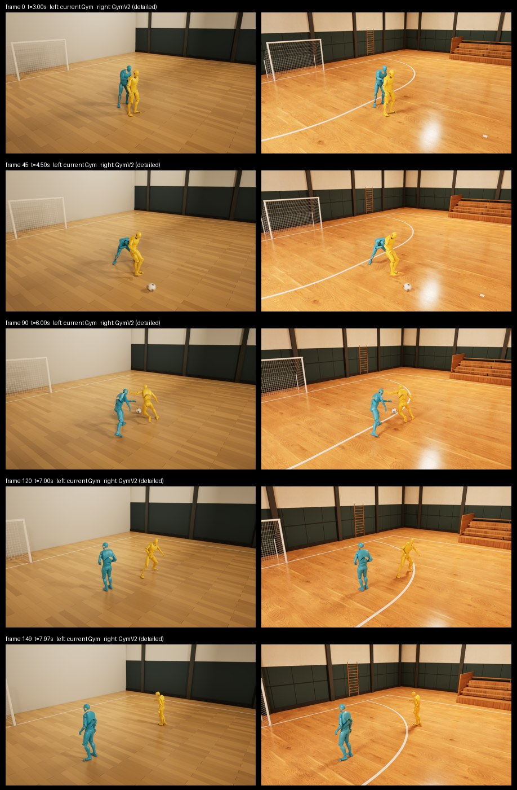
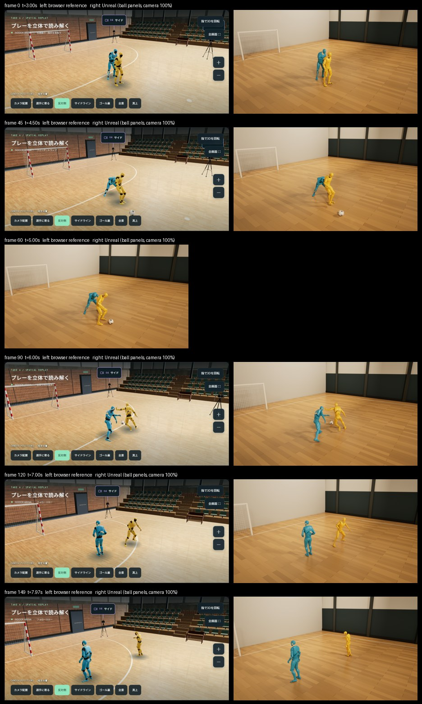

体育館に置いた 4 台の固定カメラで撮った 1 プレー(Take A、8 秒)を、2 人の選手の関節位置として 3D に再構成しました。できあがった空間は iPad の指で好きな角度から見られ、同じデータを Unreal Engine 5 で映像にもしています。
西側・ゴール裏・東側・サイド。同じ瞬間を 4 方向から同期再生。
指で回転、ピンチでズーム。カメラ配置・選手に寄る・真上など視点をワンタップで切替。
同じ動きを木の体育館でレンダリング。新旧の比較とスロー再生。
Unreal 画質のまま、指で視点をぐるっと回す。時間も自由に止めて見られる。
高さ約 1.4〜1.5 m に置いた 4 台の固定カメラ。4 本は同じ時刻に揃えてあり、下のスライダーで同時に動きます。この 4 本から 2 人の関節位置を推定し、次の章の 3D 空間になります。
同じ 3D データを Unreal Engine 5.8 の木の体育館で再生した 5 秒の映像(元データの 3.0〜8.0 秒、1920×1080、30fps)。
会場(新版): フットサル 40×20 m の正規ライン、3×2 m ゴール、実物スキャンのオーク板の床、緑の吸音パネル、漆喰の壁、高窓、木の観客席、肋木。
人物: 映像側は動作確認用の単色モデルです(3D 空間の章では写実的な選手モデルで表示)。ゴールネットは静止、ボール接触時の変形は未実装。


Unreal Engine 5 で 2 人を中心に 36 方向から同時にレンダリングした映像です。横にスワイプ(ドラッグ)で視点が回り、スライダーで時間を止めたり戻したりできます。2 本指でピンチすると寄れます。
仕組み: 2 人の中間点を追う追従カメラを 10° 刻みで 36 台置き、Unreal の Movie Render Queue で 36 本の 5 秒映像(1280×720)を一括レンダリングしています。ブラウザは指の動きに合わせて、同じ時刻のまま隣の視点の映像に切り替えます。
視点の高さは 1 段(見下ろし 18°)。もっと高い・低い視点や、ゴール裏からの固定カメラは、同じ仕組みで増やせます。